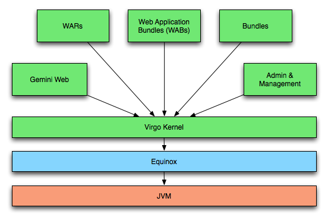

The Virgo Tomcat Server, or VTS for short, is the runtime portion of the Virgo Server. It is a lightweight, modular, OSGi-based runtime that provides a complete packaged solution for developing, deploying, and managing enterprise applications. By leveraging several best-of-breed technologies and improving upon them, the VTS offers a compelling solution to develop and deploy enterprise applications.
The Virgo Tomcat Server is built on top of the following core technologies:
Note, however, that the Virgo Tomcat Server isn’t just a combination of these technologies. Rather, it integrates and extends these technologies to provide many features essential for developing, deploying, and managing today’s enterprise Java applications.
The following diagram presents a high-level overview of the VTS’s architecture.

At the heart of the Virgo Tomcat Server is the Virgo Kernel or VK. The VK is an OSGi-based kernel that takes full advantage of the modularity and versioning of the OSGi platform. The VK builds on Equinox and extends its capabilities for provisioning and library management, as well as providing core functionality for the VTS.
To maintain a minimal runtime footprint, OSGi bundles are installed on demand by the VK. This allows for an application to be installed into a running VTS and for its dependencies to be satisfied from an external repository. Not only does this remove the need to manually install all your application dependencies, which would be tedious, but it also keeps memory usage to a minimum.
As shown in the figure, VK runs on top of Equinox within a standard Java Virtual Machine. Above the VK further layers contribute functionality to the VTS. Such as management, serviceability and web application support.
Version 3.0.3.RELEASE of the Virgo Tomcat Server supports bundle, plan, PAR, configuration, Web Application Bundle (WAB), and WAR artifacts, which enable you to build sophisticated web applications. This includes support for standard Java EE WARs, "shared library" WARs, and "shared services" WARs, each of which will be covered in greater detail in Chapter 3, Deployment Architecture.